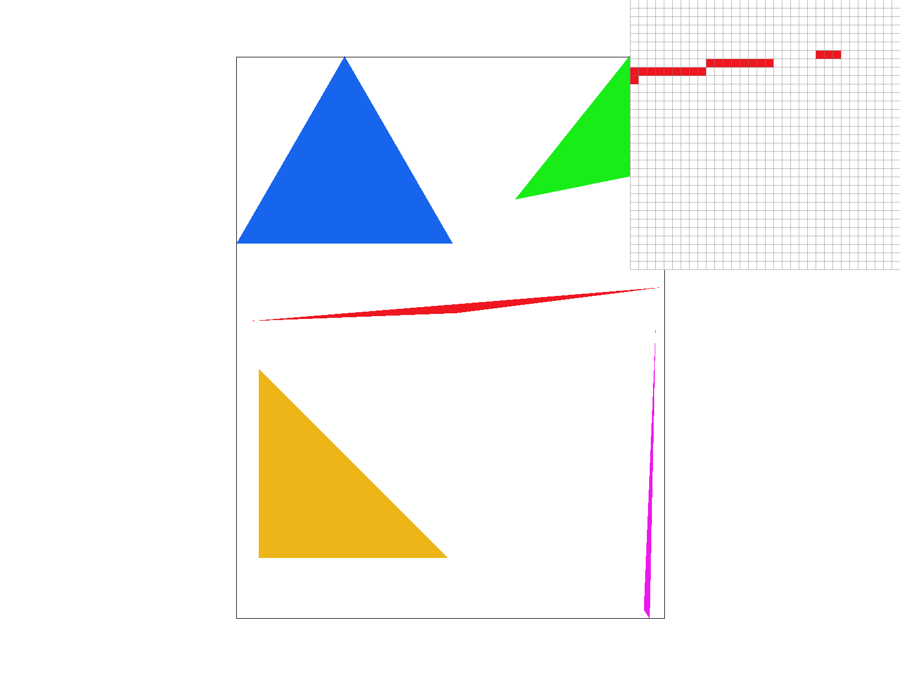

Overview of the project:
Task 1. Drawing Single-Color Triangles
For this task, we need to finish the function rasterize_triangle() by implementing the sampling methods introduced in class. For this function, we are given 3 points that form a triangle, so the first step I did to increase the efficieny is that using the built in min, and max C++ funtions to determine a bounding box of all the sample that I need to work with. After that, I have a nested for loops that check whether each sample in the bounding box are in the triangle or not using the point-in-triangle tests that is introduced in class. Over here, we need to address one problem as the spec mentions. we should draw the triangle regardless of the winding order of the verticies of the triangle. For the point-in-triangle tests, the winding order matter which it could be clock-wise or counterclock-wise. In order to address the issue, we can check whether the L0, L1, and L2 that we computed are all the same sign or not. If L0, L1, L2 are all positive or all negative, then the point is inside the triangle. Note that since we want to draw the boundary of the triangles as well, we should use lesss than or equals to 0 (<= 0) and greater than or equals to 0 (>= 0). At last, if the pixel is in the triangle, we call the method fill_pixel() to fill the pixel with specified color.
test4.svg with pixel inspector on the red triangle
As we can see, there are some jaggies here around sharp angle of the red triangle, and it is clearer using the pixel inspector. We can also preceive the same issue with the pink triangle as well. We will solve the issue in the next task using supersampling.
Task 2. Antialiasing by Supersampling
As we discovered in the previous part where the skinny triangle corners like the red and pink triangles are having some aliasing issues. In this part, we are going to implement supersampling to deal with the issue. The idea of supersampling is easy, we bascially sample mutiple locations in a single pixel and average the all the sampling pixel values into 1 final pixel value for rasterization. The reason why supersampling helps to deal with aliasing is because for the pixels where it is only partially in the triangles, like edges and corners, we still have some lighter color for it to smooth them out. In my implementation, I built on the code in the previous task, we are using the same bounding box method for better efficiency. But over here, instead of 2 nested for loops, I have 4 nested for loosp where the outer 2 for loops are for each each pixel like in the previous part, and the inner 2 for loops are for sampling the multiple locations in each pixel. The step size and the upper bound for the inner loops are all depend on the sampling rate. After we get the correct locations in the loop, we use the same point-in-triangle tests as in the previous task to see whethe the location is in the triangle or not. And here comes the trickest part of the task, since each locations is not an entire pixel, we can't just call fill_pixel() to fill the pixel like in previous task. Over here, we use the sample_buffer that is provided in the starter code, which is a vector of Color class. This vector have all the colors for each sample locations, so we need to update some other functions like set_sample_rate() to adjust to the new length of sample_buffer with different sample rate. If the sample location is in the triangle, we set the sample_buffer at index that is calculated using all 4 loop values and sample rate with the specified color. And for rasterization, we modify the resolve_to_framebuffer() function by adding all the colors in each pixel using a for loop and devided it by sample rate to get a average final color for each pixel.
test4.svg with different supersample rate
supersample rate = 1

supersample rate = 4

supersample rate = 9

supersample rate = 16

As we can see in the above comparison of different supersample rate, as the rate increase, the effect of antialiasing will get stronger. In the pixel inspector, the lighter red pixels around the sharp corners of the red triangle are making it more smooth instead of all breaking apart like in case where supersample rate = 1. And we can also see from the big picture that all the sharp corners in picture are smoother with higher supersample rate.